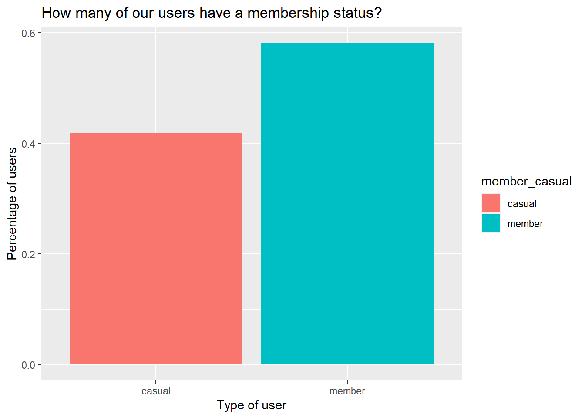
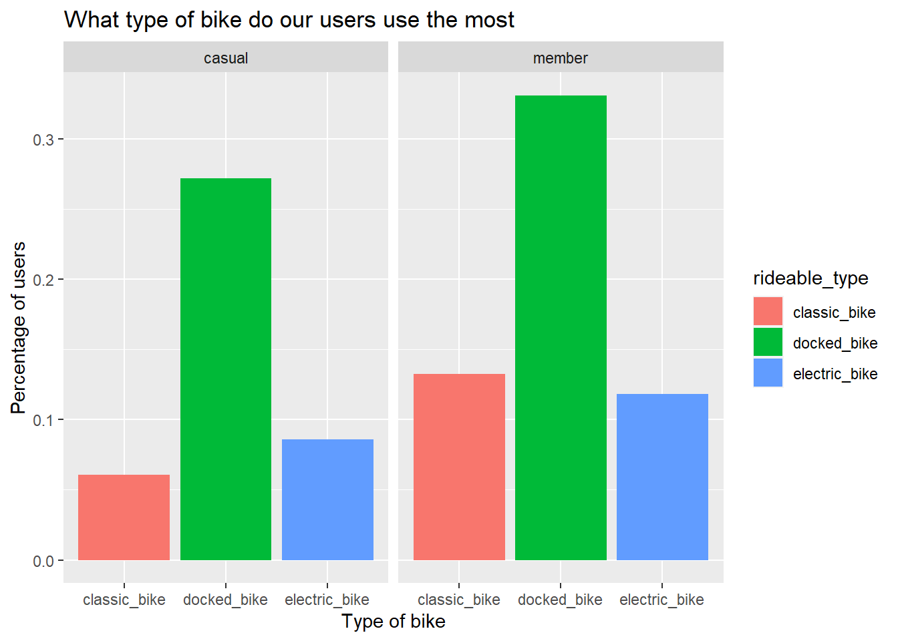
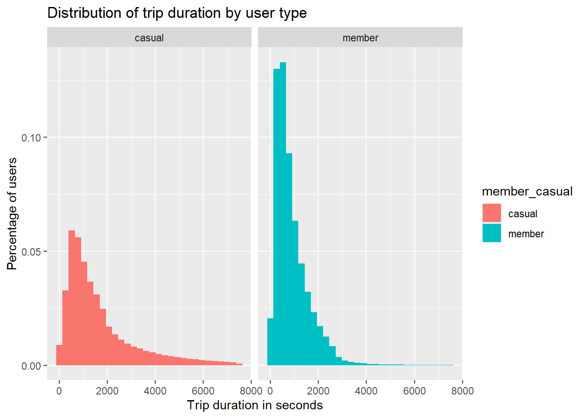
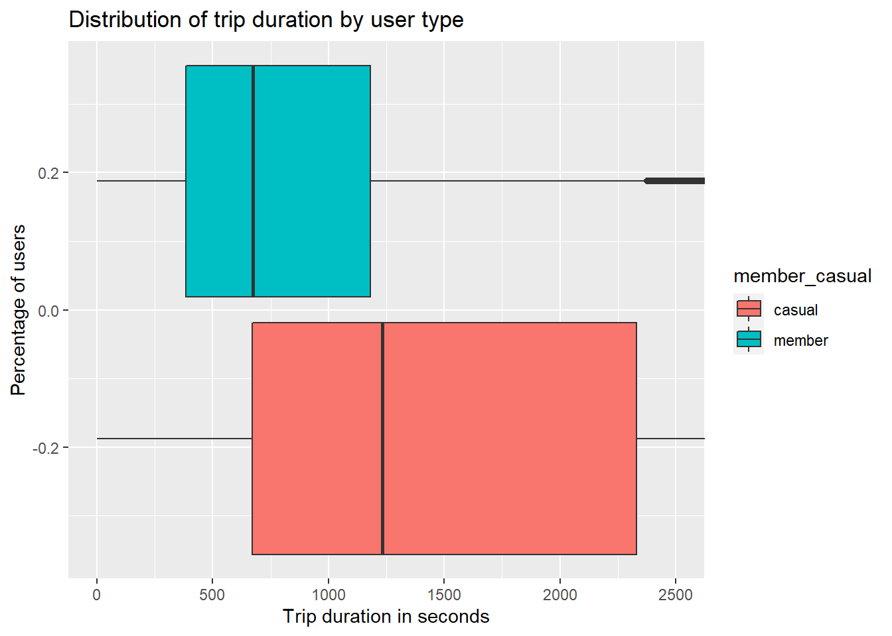
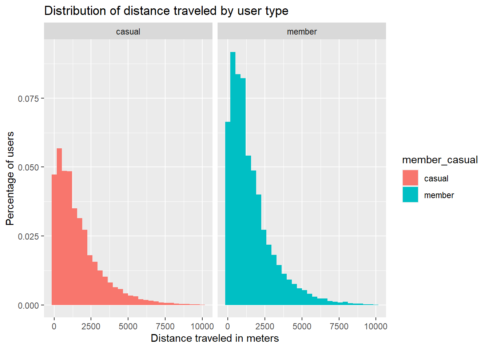
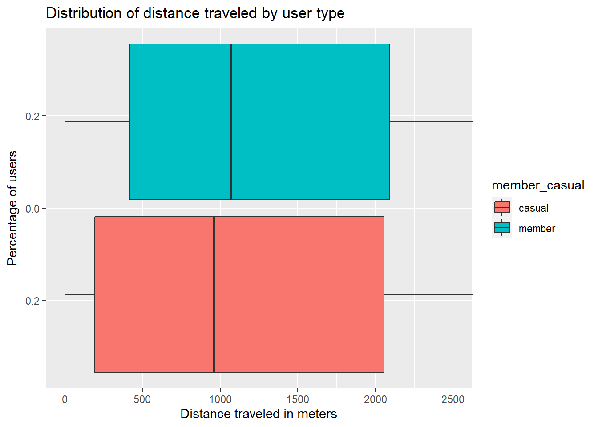
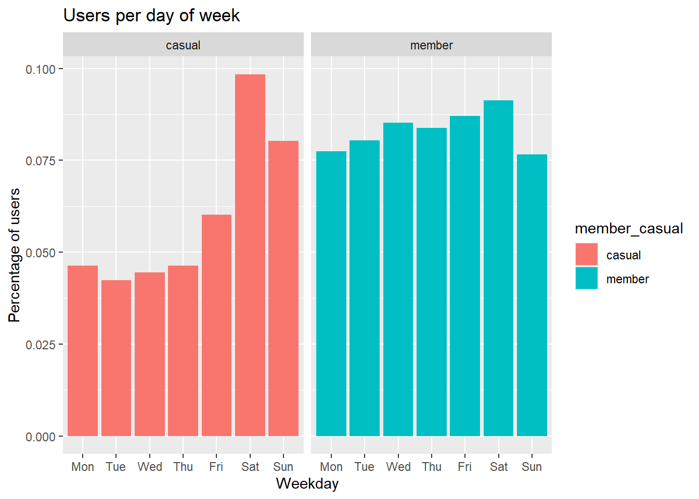
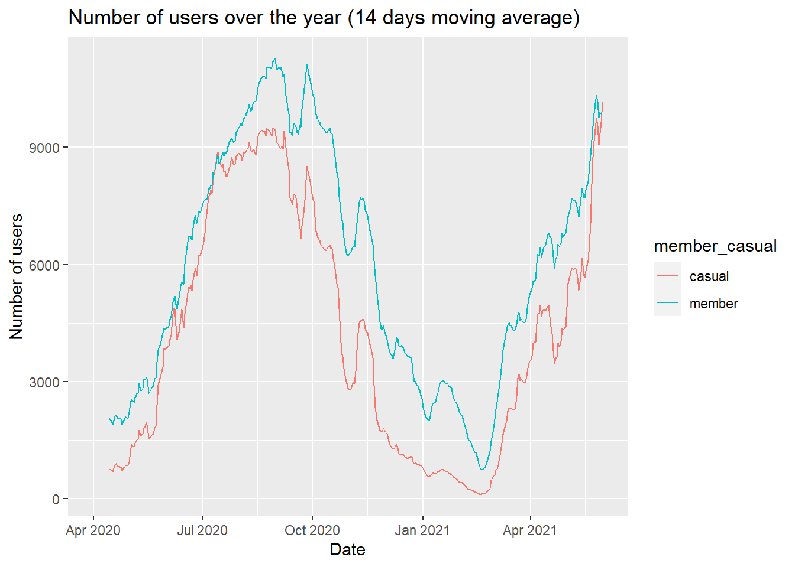
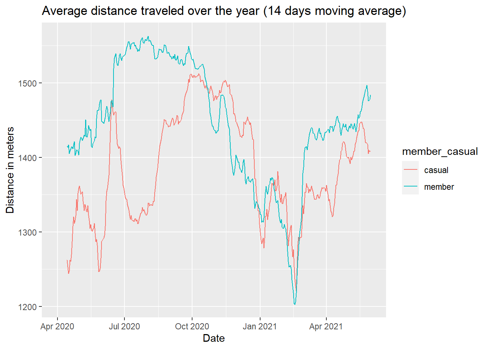

Introduction
The capstone for the course Google Data Analytics on Coursera.
Project structure
The directory structure of this project looks like this:
├── LICENSE
├── README.md <- The top-level README for developers using this project.
├── data
│ ├── external <- Data from third party sources.
│ ├── interim <- Intermediate data that has been transformed.
│ ├── processed <- The final, canonical data sets for modeling.
│ └── raw <- The original, immutable data dump.
│
├── docs <- Where the mdBook documentation will stay
│
├── models <- Trained and serialized models, model predictions, or model summaries
│
├── notebooks <- Jupyter notebooks. Naming convention is a number (for ordering),
│ the creator's initials, and a short `-` delimited description, e.g.
│ `1.0-jqp-initial-data-exploration`.
│
├── references <- Data dictionaries, manuals, and all other explanatory materials.
│
├── reports <- Generated analysis as HTML, PDF, LaTeX, etc.
│ └── figures <- Generated graphics and figures to be used in reporting
│
├── google_data_analytics_capstone_1.Rproj <- r-project environment variables
│
├── book.toml <- Settings for mdBook
Steps
To reproduce this project, run the R notebooks in the following order:
- Data Merging
- Data Cleaning
- Report
- Conclusion
Written by Vasco Ferreira.
Setup
The data provided in the Google Data Analysis Course is split by month. At the moment of writing this report, the data was from 2020-04 to 2021-05.
The data files were in the CSV format and were zipped. The original files
were saved in the ./data/external folder and then extracted to the
./data/raw folder.
The data was fetched from Divvy tripdata.
Merging data
As the data is split into several files, the first step to make sense of the data is to merge it into a single file.
The original data looked like this:
| ride_id | rideable_type | started_at | ended_at | start_station_name | start_station_id | end_station_name | end_station_id | start_lat | start_lng | end_lat | end_lng | member_casual |
|---|---|---|---|---|---|---|---|---|---|---|---|---|
| A847FADBBC638E45 | docked_bike | 2020-04-26 17:45:14 | 2020-04-26 18:12:03 | Eckhart Park | 86 | Lincoln Ave & Diversey Pkwy | 152 | 41.8964 | -87.661 | 41.9322 | -87.6586 | member |
| 5405B80E996FF60D | docked_bike | 2020-04-17 17:08:54 | 2020-04-17 17:17:03 | Drake Ave & Fullerton Ave | 503 | Kosciuszko Park | 499 | 41.9244 | -87.7154 | 41.9306 | -87.7238 | member |
| 5DD24A79A4E006F4 | docked_bike | 2020-04-01 17:54:13 | 2020-04-01 18:08:36 | McClurg Ct & Erie St | 142 | Indiana Ave & Roosevelt Rd | 255 | 41.8945 | -87.6179 | 41.8679 | -87.623 | member |
| 2A59BBDF5CDBA725 | docked_bike | 2020-04-07 12:50:19 | 2020-04-07 13:02:31 | California Ave & Division St | 216 | Wood St & Augusta Blvd | 657 | 41.903 | -87.6975 | 41.8992 | -87.6722 | member |
| 27AD306C119C6158 | docked_bike | 2020-04-18 10:22:59 | 2020-04-18 11:15:54 | Rush St & Hubbard St | 125 | Sheridan Rd & Lawrence Ave | 323 | 41.8902 | -87.6262 | 41.9695 | -87.6547 | casual |
The final data has around 4.3 million rows.
Cleaning data
The process to clean the data is the following:
- Check if the trip duration is correct by calculating it using the formula \(\text{ended_at} - \text{started_at} > 0\).
- Check if there is any
usertypemissing - Check if there is any
stationmissing - Even if the station is missing, keep data that has the
latitudeandlongitudeso we can calculate the distance traveled. - Calculate the distance traveled with the Haversine Formula
Note: This process will take a while to complete as it uses at least 2-3GB
RAM and the Haversine formula takes a while to calculate all the distances
for all the 4.3 million rows.
Analysis
This data analytics report is one the Capstone Exercises for the Google Data Analytics Course on Coursera. This case study is about a bike-sharing company that aims to increase the number of annual members (subscribers) as these type of members are the most profitable for the company.
Information about the company:
- 5800 bikes
- 600 docking stations
- different types of bikes:
- traditional bikes
- reclining bikes
- hand tricycles
- cargo bikes
- 92% of members use traditional bikes
- 8% of members use the other types of bikes
- 70% of members use bikes for leisure
- 30% of members use bikes for commuting
The task is to answer the first question of the new marketing program:
How do annual members and casual riders use Cyclistic bikes differently?
How many users have a membership status?
To answer this question we need to first group the data by each member type and then calculate some basic descriptive statistics:

In this graph we can see that almost 60% of our users have a membership status.
What is the most used type of bike?

Both types of users use the docked bike the most but, the member users use
the classic bike more than the electrict bike. The casual users prefer
the electric bike over the classic bike.
For how long do our users travel?


The average casual user spends twice more of the time of a member during a
trip - 20 minutes versus 11 minutes. And the trip duration is more spread out
among casual members. This should be the case of the majority of the users
using bikes for leisure trips as indicated in the basic information.
How far do our users travel?
Although the distance calculated through the latitude and longitude isn't the most accurate representation of the distance traveled as trips may not be in a straight line, it is the only representation that we currently have.


The average casual and member users travel about the same distance,
however, the member users' shorter trips are longer than the casual users'.
When do our users travel?

In this graph we notice that member users most probably use our bikes for
commuting during the week as oposed to casual members who use our bikes more
at weekends.
How many users do we have through the year?


It is very difficult to draw conclusions from this graph for the simple fact that this is not a normal year as the world was affected by COVID-19 and COVID-19 also has trends. However, we can clearly see a trend in users over the year so that in the summer there are more users than in the rest of year.
Conclusion
The problem is: How do annual members and casual riders use Cyclistic bikes differently?. The stakeholders involved in this problem are Lily Moreno, the
director of marketing and my manager, the marketing team that is interested in
helping the company and the executive team that will decide whether to approve
the marketing program. To make it more effective to convey the result of the
program to the stakeholders I must take into account the fact that:
- the executive is detail-oriented
- the marketing team needs to better understand how annual members and casual riders differ, why casual riders would buy a membership, and how digital media could affect their marketing tactics.
- and the manager is responsible for the the development of the marketing campaigns.
Also, I've tried to do this exercise by following a few conventions, such as file structure (cookiecutter data science template that I adapted to the R project) and filling out different R notebooks for different steps. The report is also a separate file to allow export to other formats such as PDF and HTML.
(For this case study, the data was supplied as if being data collected by the company itself so I will follow that roleplay.)
The data was collected by the company itself during the last year. It is organized by month, ranging from 2020-04 to 2021-05. The data is standardized - I assume it was collected by using sensors on the bikes themselves and also the whole subscription software system that handles all the data about the users and the bikes. I will also assume that there are no problems with bias as the data is about all the bikes and users - not a sample - and finding out if the product itself is biased towards a specific type of user is a problem outside of this case study.
I split the cleaning in two steps: merging and cleaning. The first step is merging the data of the different months into a single dataset and the second step is about ensuring that there are no missing data, wrongly typed membership status, bike types. Also, I've calculated the trip duration and the distance traveled (by using the latitude and longitude). This two new columns will help on filtering/fixing errors about dates and distances. Data that had dates and longitude and latitude data missing were removed.
This is what I found about the data:
- almost 60% of users have a
membership status - the most used bike is the
docked bike - in terms of distance, both users do around 1km
- in terms of time traveled, the
casualuser spends about 20 minutes and thememberuser spends about 11 minutes - there are more
casualusers at weekends membersuse bikes throughout the week - I assume that they are commuting- there are more users (both members and casuals) during the summer, more specifically July - October
casualstravel more distance on October-January and members travel more distance on July - October
All the graphs I've made are standard graphs used in analysis:
- bar
- line
- box-plot
- histogram.
I'm not proud of any of the graphs as there isn't anything new, but the last graphs I've made pointed me to consider about COVID-19 as the lows coincide with the periods of confinement of the pandemic.
Honestly, I don't know what to recommend. I don't have enough information nor experience to know what should be done in this case. To make matters worse, the fluctuations in users and distance/time traveled also change accordingly to the COVID-19 fluctuations. Before writing any conclusions I would have to speak with the manager and the team before arriving at any conclusion. This particular situation isn't something I alone can manage. I don't have enough information.